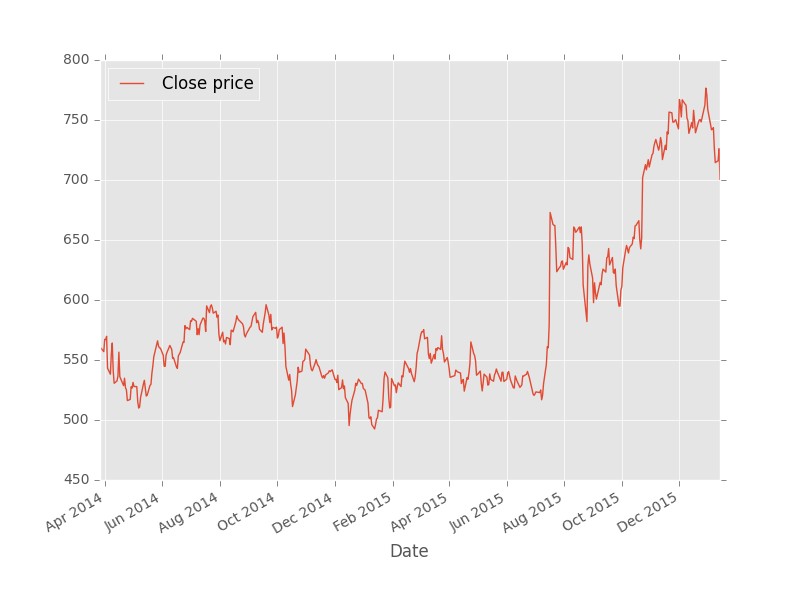

Backtesting for algorithmic trading
Backtesting is a method of applying trading strategy to historical financial data and evaluating the trading strategy. This program contains financial data downloading, cleansing and storing, trading algorithm building and algorithm deploying.
Data downloading
It is very easy to use Yahoo API or Quandl to download financial data.
Yahoo API is like:
http://ichart.finance.yahoo.com/table.csv?s=GOOG&a=2014&b=1&c=23&d=2015&e=2&f=10Quandl has Python API, you can use the following to dowload data in Python:
import Quandl
mydata = Quandl.get("GOOG/NYSE_SPY") The format of mydata is Pandas data format.
Data cleansing and storing
Pandas is a great tool for data analysis in Python. Pandas is used for data cleansing, processing, and sometimes plotting.
Here is a picture of daily closed price of Google plotted by Pandas:

Data can be stored on local machines by SQLAlchemy (http://www.sqlalchemy.org/) or other SQLs such as MySQL Python API. SQLAlchemy supports SQLite, Postgresql, MySQL, Oracle, MS-SQL and others.
Trading algorithm building
Both analytic model or machine learning method can be used as trading algorithm. The only difference is: ananlytic model can be tested on the entire data; machine learning method can be only tested on the testing data set (The data would be divided as training and tesing set before applying machine learning). The most popular tool of machine learning in Python is Scikit-learn.
Trading algorithm deploying
After having the trading algorithm, you need to build you portfolio according to the trading algorithm. This also includes creating positions, holdings and a set of trading orders.